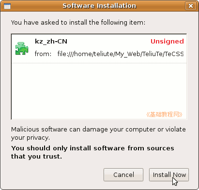

KompoZer 简体中文语言包
作者：TeliuTe 来源：基础教程网
1、简介 返回主页 KompoZer 教程
名称：KompoZer 简体中文语言包
平台：Ubuntu/Windows
语言包官方下载：http://kompozer.sourceforge.net/l10n/langpacks/
KompoZer 程序下载：http://sourceforge.net/projects/kompozer/files/
本地下载：
KompoZer 0.8b3 语言包
下载：kompozer-0.8b3.zh-CN.xpi （点右键选链接另存为)
KompoZer 0.8b3 华军下载：http://www.newhua.com/soft/85266.htm
KompoZer 0.8a4 语言包
下载：kompozer-0.8a4.zh-CN.xpi （点右键选链接另存为)
KompoZer 0.7.10 语言包：kz-0710-zhCN.20070927.xpi（点右键选链接另存为)
KompoZer 0.7.10 华军下载：http://www.newhua.com/soft/60185.htm
2、安装方法
1）启动 KompoZer，点菜单“Tools－Add-ons”；
2）在出来的面板中，点左下角的“Install”按钮；
3）在出来的打开对话框中，找到下载的 kz_zh-CN.xpi 文件，点“打开”；

4）出来一个提示框，提示没有经过签名，稍等点右下角的“Install Now”；

5）然后开始安装，完成后出来一个提示，要求重新启动 KompoZer，点右下角“Restart KompoZer”按钮；
6）重新打开 KompoZer 界面就是中文的了；
7）查看语言包的方法是，点菜单“工具－附加组件－语言”，可以禁用或卸载；
本节学习了安装 KompoZer中文语言包的基本方法，如果你成功地完成了练习，请继续学习；
本教程由86团学校TeliuTe制作|著作权所有
基础教程网：http://teliute.org/
美丽的校园……
转载和引用本站内容，请保留版权信息和本站链接。
|
|